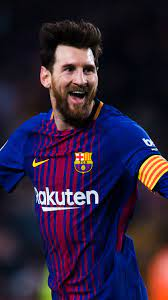
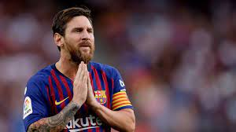
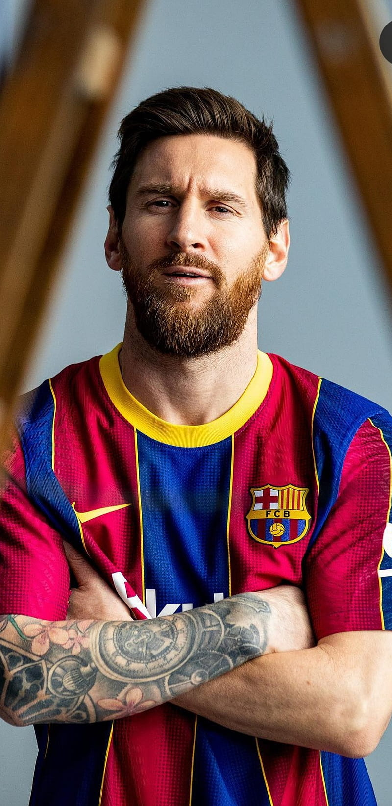
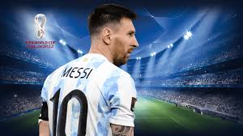
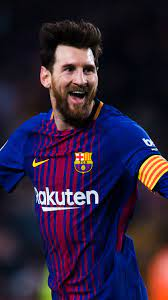
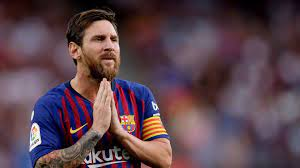
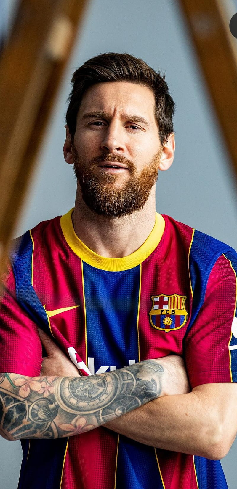
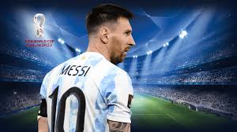

I AM
Lionel Messi
Lionel messi
Lionel Messi, parfois surnommé Leo Messi, né le 24 juin 1987 à Rosario en Argentine, est un footballeur international argentin jouant au poste d'attaquant au Paris Saint-Germain. Seul joueur septuple Ballon d'or et sextuple Soulier d'or européen, Messi est considéré comme l'un des meilleurs joueurs de football toutes générations confondues. Joueur le plus décisif du xxie siècle, meilleur buteur sous un seul maillot en club, il est élu meilleur ailier droit de tous les temps par France Football tandis que l'International Federation of Football History & Statistics (IFFHS) le désigne meilleur joueur et meilleur meneur de jeu de la décennie de 2011 à 2020.
work
 







Messi commence le football dans sa ville natale de Rosario en
Argentine au sein des clubs de Grandoli et des Newell's Old Boys.
Atteint d'un problème de croissance, il rejoint à treize ans le FC
Barcelone, qui financera son traitement hormonal. Joueur emblématique
de ce club dont il est notamment le joueur le plus capé, il y reste
vingt-et-une années, dont dix-sept professionnelles, avant de
rejoindre le Paris Saint-Germain en 2021 pour poursuivre sa
carrière.
Joueur créatif et complet, aussi bien buteur, meneur et organisateur
du jeu, il détient de multiples records : octuple vainqueur du
Pichichi, il est le meilleur buteur de l'histoire du championnat
d'Espagne, du FC Barcelone, de la Supercoupe d'Espagne, de la
Supercoupe d'Europe, du Clásico, du derby barcelonais, de la sélection
argentine, des sélections sud-américaines et le deuxième meilleur
buteur de la Ligue des champions. Auteur de plus de 750 buts et 350
passes décisives en carrière et impliqué sur plus de 1 100 buts, il
est le deuxième meilleur buteur de tous les temps en matchs
officiels.
Il détient aussi le record mondial du nombre de buts inscrits sur une
saison sur une année civile, et le record de buts sur une saison dans
un championnat européen. Il est dans un autre registre le joueur avec
le plus de passes décisives officielles enregistrées dans l'histoire
du football et fait partie des joueurs avec plus de 1 000 matchs
disputés en carrière. Avec quarante-deux titres remportés en carrière,
il possède l'un des plus beaux palmarès de son sport. Il a notamment
remporté quatre Ligues des champions, trois Coupes du monde des clubs
de la FIFA, trois Supercoupes de l'UEFA, dix championnats d'Espagne,
un championnat de France, sept Coupes d'Espagne, huit Supercoupes
d'Espagne et un Trophée des Champions. Avec son pays, Messi remporte
la Coupe du monde des moins de 20 ans ainsi qu'une médaille d'or aux
Jeux olympiques. Toujours sous les couleurs de l’Argentine, il
remporte la Copa América, la Coupe des champions CONMEBOL–UEFA et la
Coupe du monde en 2022 — dernier grand titre international qu'il lui
manquait —, dont il est désigné Meilleur joueur. Sa notoriété dépasse
le monde du sport. Il est nommé trois fois dans le classement des
personnalités les plus influentes de la planète par le magazine Time
et est le premier footballeur à faire la Une du magazine américain.
Ambassadeur de l'UNICEF, il a créé une fondation d'aide à l'enfance à
l'âge de 20 ans. Selon Forbes, il est entré dans le club très fermé
des sportifs milliardaires.
resume
Il est petit (1,69 m). Il est brun et il a les cheveux plutôt
court.
Lionel Messi a joué une grande partie de sa carrière sous les couleurs
du FC Barcelone ou il a marqué un total de 672 buts.
Messi a été formé à la masia et il a évolué avec les équipes de jeunes
barcelonaise.
| Vie privée et personnalité | Autres implications |
|---|---|
|
Actions prétendument caritatives, engagement humanitaire et philanthropique |
Activités lucratives et investissements |